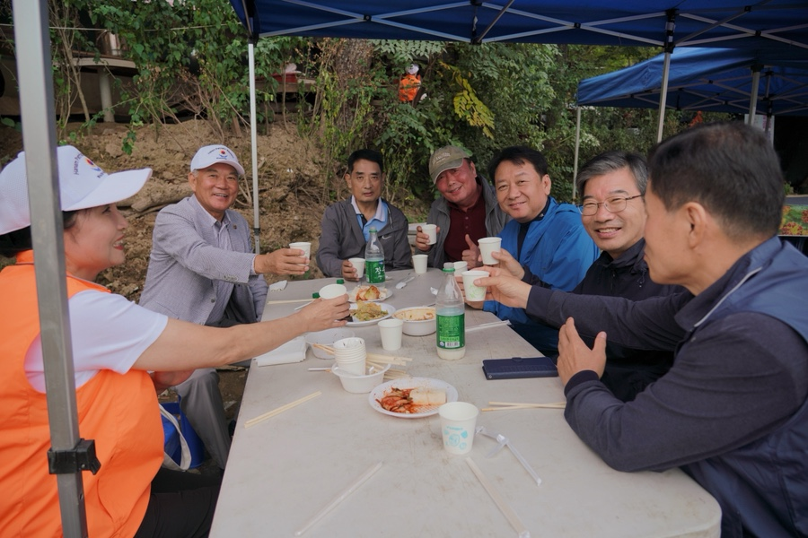
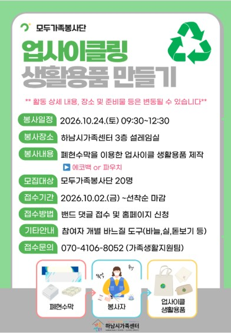
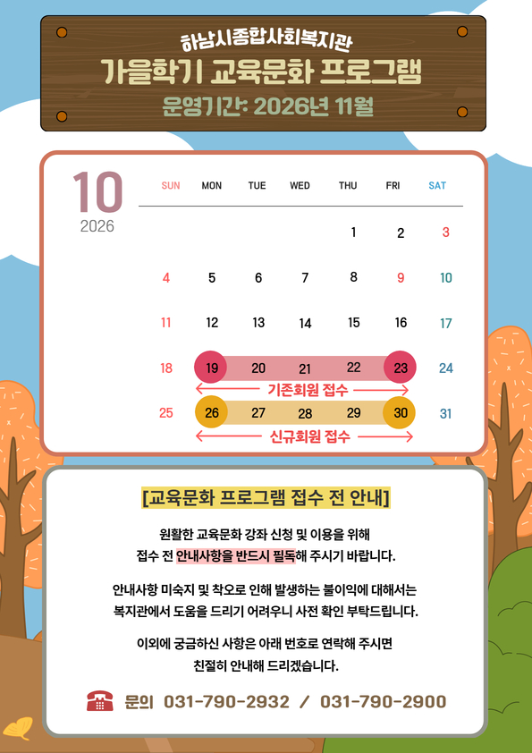
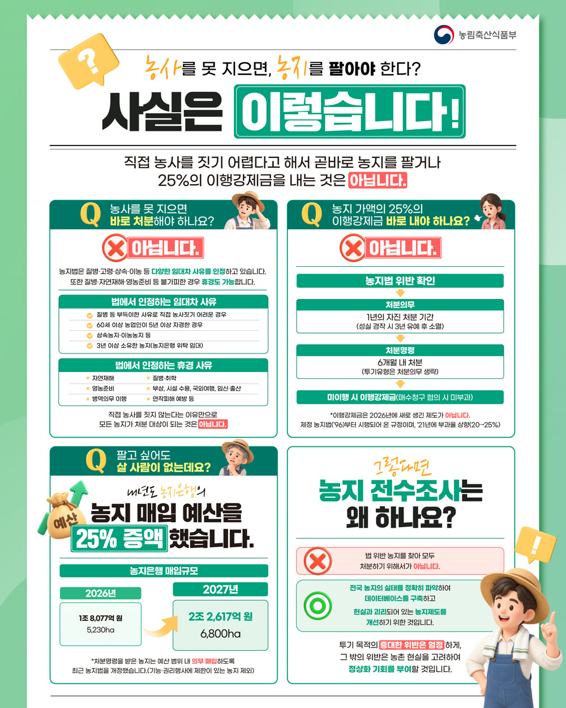

52호 | 2026년 10월 6일 발행
📌 이번 호 주요 목차
 우리동네 국회의원 이광재
우리동네 국회의원 이광재
📝 현장일지
이광재, "금잔화처럼 환한 이웃들"… 제5회 덕풍골 금잔화 한마당 축제
이광재 의원이 개천절 오후 덕풍골 청시회농장에서 열린 '제5회 덕풍골 금잔화 한마당 축제'를 찾아 주민들께 인사를 드렸습니다. 2022년부터 다섯 해째 이어져 온 마을 축제로, 연휴를 맞아 많은 주민이 모여 노래 솜씨를 뽐내고 웃음을 나눴습니다. 이 의원은 금잔화처럼 환하게 맞아 주신 이웃들 덕분에 하남의 정을 느낀 하루였다며, 아이가 잘 자라는 힘은 가족을 넘어 이웃의 사랑에서도 나온다고 전했습니다. 서로 안부를 묻고 기쁨을 나누는 공동체가 하남의 힘이라고 강조하며, 아침저녁으로 쌀쌀해진 날씨에 건강 유의하시고 남은 연휴 가족·이웃과 행복한 시간 보내시길 바란다고 인사했습니다.

📌 출처: 이광재 공식 네이버 블로그
📰 언론보도
[한스경제] 이광재 "10년간 제때 못 쓴 예산 812조… AI로 잠든 예산 깨워야"
이광재 국회 예산결산특별위원장(경기 하남시갑)이 재정경제부·행정안전부·교육부로부터 받은 자료에 따르면, 2016~2025 회계연도 10년간 다음 해로 넘기거나(이월 417조 원) 쓰지 못한(불용 394조 원) 예산이 812조 원을 넘었습니다. 한 해도 빠짐없이 67조 원 이상, 연평균 81조 원 규모이며, 재정 주체별로는 지방정부가 70.7%로 가장 많았습니다. 중앙부처가 보조사업자에게 돈을 내려보내면 '집행'으로 잡히지만 현장 실집행률은 절반 수준에 그치고, 특별교부세 일부가 연말에 늦게 배정되는 구조도 원인으로 지적됐습니다. 이 의원은 "예산만 확보하고 보자는 행정 편의주의와 경직된 제도가 이월·불용을 키우고 있다"며 "AI로 집행 병목을 실시간 파악해 예산을 즉시 재배분하는 통합 예·결산 시스템을 구축하고, 예산을 아끼거나 다시 써서 성과를 낸 공무원·지자체에는 확실히 보상해야 한다"고 밝혔습니다.
📌 출처: 한스경제 (주진 기자)
📰 언론보도
[뉴데일리] 이광재 "과세 기준, 현재 물가로 현실화해야… 소득세 공제 등 상향 필요"
이광재 국회 예산결산특별위원장이 수십 년간 묶여 있는 과세 기준을 지금 물가에 맞게 고치자는 '과세 기준 및 벌금형·행정질서벌 등 제재 기준의 현실화 촉구 결의안'을 대표발의했습니다. 양도소득세 기본공제(250만 원)는 30년째, 상속세 기초·일괄공제(2억~5억 원)와 배우자 상속공제(5억 원)는 29년째, 자녀 증여재산 공제(5천만 원)는 10년째 제자리입니다. 결의안은 정부가 매년 경제성장률과 화폐가치 변동을 따져 공제액·비과세 기준을 점검하고 국회에 보고하도록 하고, 물가연동제를 단계적으로 도입해 세금의 예측 가능성을 높이자는 내용을 담았습니다. 이 의원은 "1인당 국민소득 1만 달러 시절에 만든 과표 기준을 4만 달러를 바라보는 지금까지 유지하는 것은 유통기한이 지난 제도를 방치하는 것"이라며 국정감사와 정기국회에서 조세제도 대전환의 계기를 만들겠다고 밝혔습니다. 한병도 원내대표 등 19명이 공동발의에 참여했습니다.
📌 출처: 뉴데일리 (남수지 기자)
📰 하남 지역 주요 뉴스
🚆 교통
하남시, GTX-D 황산·교산 경유 요구… 정부 검토 결과 기다리는 중
하남시가 GTX-D 노선이 황산사거리와 교산신도시를 거치도록 정부에 요구하고 있습니다. 2024년 정부가 발표한 GTX-D 구상에는 교산신도시 경유가 포함됐지만, 황산사거리 경유는 하남시가 추가로 요청한 안입니다. 시는 황산사거리가 서울로 향하는 관문이자 약 8.1만 명이 생활하는 교통 거점으로, 경유 시 하루 이용 수요가 약 1만 5천 명에 이를 것으로 분석했습니다. 지난 6월에는 주민 2만 2,543명의 서명부를 국토교통부 등에 전달했고, 8월 28일에는 국토부 차관을 만나 제5차 국가철도망 구축계획 반영을 다시 요청했습니다. 국토부는 "면밀히 검토하겠다"고 답했으며, 시는 국회의원·주민과 함께 반영을 위해 노력하겠다는 입장입니다.
📌 출처: 서울경제TV (김권수 기자)
🏫 교육
하남 신장고, 일본·대만 학교와 국제교류… 글로벌 역량 키운다
하남 신장고등학교가 '2026 국제교류 선도학교'로 선정돼 일본·대만 학교와 교류 프로그램을 운영합니다. 학교에서 뽑은 '국제교류학생단'이 교류 주제를 직접 정하고 준비하는 방식으로, 일회성 만남이 아닌 꾸준한 관계를 만드는 데 초점을 맞췄습니다. 일본 가이후칸고등학교와는 이달 27일 줌으로 첫 실시간 교류를 갖고, 미리 주고받은 각 나라 문화를 담은 '컬쳐박스'를 함께 열어 보며 소감을 나눌 예정입니다. 내년 3월에는 두 학교가 업무협약(MOU)도 맺을 계획입니다. 대만 스딩고등학교와는 일대일 이메일 펜팔과 온라인 플랫폼 영상 공유로 서로의 학교생활과 문화를 알아갑니다.
📌 출처: 경기일보 (황선주 기자)
🛍️ 생활/나들이
스타필드 하남, 10주년 축하 파티 X '고양이와 스프'… 11일까지 체험 행사
스타필드가 가을 나들이철을 맞아 점포별 체험형 행사를 마련한 가운데, 스타필드 하남은 10월 3일부터 11일까지 모바일 게임 '고양이와 스프'와 손잡고 '스타필드 10주년 축하 파티'를 엽니다. 행사장은 대형 10주년 케이크와 게임 속 고양이 캐릭터로 꾸며 숲속 고양이들이 스타필드의 열 번째 생일을 축하하는 콘셉트로 구성됐습니다. 게임 체험, 굿즈 랜덤 뽑기, 키링 만들기, 확장현실(XR) 포토존 등을 운영하며, 9일부터 11일까지는 야외광장에서도 공연과 체험 프로그램이 이어집니다. 한글날 연휴에 아이와 가볍게 들러 보기 좋은 행사입니다.
📌 출처: 중앙이코노미뉴스 (윤남웅 기자)
💬 하남 맘카페 HOT 이슈
이번 주 하남 지역 맘카페(미사맘스클럽, 하남맘, 하남교산맘, 교산살래 등)에서 많이 오르내린 HOT 이슈 TOP 3입니다.
1️⃣ [교통] "9호선, 언제 오나요"… 강동하남남양주선 2·5공구 조기 착공 도민청원 1만 명 돌파
현황: 하남교산맘과 교산살래에는 9호선 강동하남남양주선 2·5공구 수의계약을 통한 조기 착공을 요구하는 경기도민청원이 10월 1일 동의 1만 건을 넘어 경기도 답변 요건을 채웠다는 소식이 공유됐습니다. 2·5공구가 잇따라 유찰되면서 개통이 늦어질 수 있다는 걱정이 커졌고, 청원인은 단독 응찰자와의 수의계약 전환으로 2027년 안에 착공해 달라고 요구했습니다. 왕숙·다산 등 남양주 맘카페에서도 같은 청원 참여 글이 이어졌습니다.
💡 주민 포인트: 1만 명을 넘긴 도민청원은 경기도가 공식 답변을 하게 됩니다. 카페에서는 약 한 달 뒤 답변이 나올 것으로 보고 있으니, 결과는 경기도 누리집의 도민청원 게시판에서 확인하세요.
💬 주민 반응: "입주보다 교통이 먼저라는 약속을 지켜 달라"는 목소리와 "서울 구간은 수의계약에 들어갔는데 경기도는 조용하다"는 아쉬움이 함께 나왔습니다.
📌 출처: 네이버 카페 (하남교산맘, 교산살래, 왕숙맘 등)
2️⃣ [건강] "어린이집에 장염이 돌아요"… 아이 배앓이·열에 소아과·응급실 문의 잇따라
현황: 하남맘에는 어린이집에 장염이 돌아 친구들 여러 명이 걸렸다며, 갑자기 열이 나거나 배를 아파하면 바로 병원에 가야 하는지, 설사가 이어지면 탈수가 걱정된다는 글이 올라왔습니다. 하남맘 모여라 카페에서는 소아과 추천을 묻는 글이, 미사맘스클럽에서는 연휴 중 지금 갈 수 있는 응급실을 묻는 글과 영유아검진 예약 날짜를 바꿀 사람을 찾는 글도 올라왔습니다.
💡 주민 포인트: 장염은 손 씻기와 음식 위생이 가장 중요합니다. 아이가 설사·구토를 계속하거나 소변이 줄고 처지면 탈수 신호일 수 있으니 바로 진료를 받으세요. 한글날(9일) 연휴에 문 여는 병원·약국은 '응급의료포털(e-gen)'이나 129에서 확인할 수 있습니다.
📱 지금 문 연 약국·병의원을 내 위치 반경 3km 안에서 바로 찾아 주는 '오늘 문 연 약국·의원' 앱 (medi365.vercel.app) →
📱 지금 문 연 약국·병의원을 내 위치 반경 3km 안에서 바로 찾아 주는 '오늘 문 연 약국·의원' 앱 (medi365.vercel.app) →
💬 주민 반응: "무사히 지나가길 바란다"며 서로 걱정해 주는 댓글과 함께 가까운 소아과 정보를 나누는 글이 이어졌습니다.
📌 출처: 네이버 카페 (하남맘, 하남맘 모여라, 미사강변도시 미사맘스클럽)
3️⃣ [교육·이사] "미사에서 선호하는 중학교 있나요?"… 이사 앞두고 학교 배정·전학, 신설 청아고 첫해 관심
현황: 미사맘스클럽에는 이사를 고민하며 미사에서 학원가가 가깝거나 면학 분위기가 좋아 선호되는 중학교가 있는지 묻는 글이 올라왔습니다. 이사로 지금 다니는 학교의 배정 지역을 벗어나면 꼭 전학을 가야 하는지 묻는 글, 신설되는 미사4고(청아고)의 첫해 입학 인원을 궁금해하는 글도 이어졌습니다.
💡 주민 포인트: 중학교는 거주지 기준 학교군에 따라 배정되며, 주소를 옮긴 뒤 다니던 학교를 계속 다닐 수 있는지는 학년과 상황에 따라 다릅니다. 이사 전에 광주하남교육지원청이나 해당 학교에 미리 확인하세요.
💬 주민 반응: "학교 수준은 비슷비슷하고 집에서 가까운 게 최고"라는 의견이 많았고, 단지와 학교가 도보 5분 거리인 곳을 추천하는 댓글도 있었습니다.
📌 출처: 네이버 카페 (미사강변도시 미사맘스클럽)
🎭 ALL IN 하남라이프
2026년 10월 6일 기준 한눈에 보는 하남시 최신 문화·행사·교육 안내 가이드
💗 2026.10.16 ~ 11.06 매주 금 | 부모 집단상담
「공감으로 연결되는 부모의 시간」 하반기 부모(양육자) 집단상담
"함께 나누고, 함께 성장하는 부모의 시간"
하남시청소년상담복지센터가 청소년 자녀 양육으로 고민하는 부모님과 보호자를 위한 무료 집단상담을 엽니다. 양육의 어려움을 나누고 스스로의 마음을 돌보는 '자기 위로'에 중점을 둔 프로그램입니다.
🗓 일시: 2026년 10월 16일, 23일, 30일, 11월 6일 (매주 금) 오전 10~12시 ※ 4회기 모두 필참
👥 대상: 청소년 자녀 양육에 어려움이 있는 부모 및 보호자 10명 (선착순)
📍 장소: 하남시청소년상담복지센터 2층 올제 (조정대로 111)
🧑🏫 강사: 상담심리전문가 김충희 (레브심리상담연구소 소장)
📚 내용: 나의 청소년 시기 돌아보기 → 청소년기·중년부부 발달 이해 → 해결중심 대화법 → 소통의 걸림돌 확인하기
💰 비용: 무료 / 📝 신청: 센터 홈페이지 또는 포스터 QR코드
☎️ 문의: 031-790-6106
하남시청소년상담복지센터가 청소년 자녀 양육으로 고민하는 부모님과 보호자를 위한 무료 집단상담을 엽니다. 양육의 어려움을 나누고 스스로의 마음을 돌보는 '자기 위로'에 중점을 둔 프로그램입니다.
🗓 일시: 2026년 10월 16일, 23일, 30일, 11월 6일 (매주 금) 오전 10~12시 ※ 4회기 모두 필참
👥 대상: 청소년 자녀 양육에 어려움이 있는 부모 및 보호자 10명 (선착순)
📍 장소: 하남시청소년상담복지센터 2층 올제 (조정대로 111)
🧑🏫 강사: 상담심리전문가 김충희 (레브심리상담연구소 소장)
📚 내용: 나의 청소년 시기 돌아보기 → 청소년기·중년부부 발달 이해 → 해결중심 대화법 → 소통의 걸림돌 확인하기
💰 비용: 무료 / 📝 신청: 센터 홈페이지 또는 포스터 QR코드
☎️ 문의: 031-790-6106
📌 출처: 하남시청소년상담복지센터
♻️ 2026.10.24(토) 09:30~12:30 | 가족봉사
모두가족봉사단 「업사이클링 생활용품 만들기」 (하남시가족센터)
"버려지는 현수막이 에코백·파우치로"
하남시가족센터 모두가족봉사단이 폐현수막을 활용해 업사이클 생활용품을 만드는 봉사활동을 진행합니다.
🗓 봉사일정: 2026년 10월 24일(토) 09:30 ~ 12:30
📍 장소: 하남시가족센터 3층 설레임실
🧵 내용: 폐현수막을 이용한 업사이클 생활용품(에코백 또는 파우치) 제작
👥 모집대상: 모두가족봉사단 20명
📝 접수: 10월 2일(금)부터 선착순 마감 / 밴드 댓글 접수 및 홈페이지 신청
🎒 준비물: 개별 바느질 도구(바늘, 실, 돋보기 등)
☎️ 문의: 가족생활지원팀 070-4106-8052
※ 활동 내용, 장소, 준비물은 변동될 수 있습니다.
하남시가족센터 모두가족봉사단이 폐현수막을 활용해 업사이클 생활용품을 만드는 봉사활동을 진행합니다.
🗓 봉사일정: 2026년 10월 24일(토) 09:30 ~ 12:30
📍 장소: 하남시가족센터 3층 설레임실
🧵 내용: 폐현수막을 이용한 업사이클 생활용품(에코백 또는 파우치) 제작
👥 모집대상: 모두가족봉사단 20명
📝 접수: 10월 2일(금)부터 선착순 마감 / 밴드 댓글 접수 및 홈페이지 신청
🎒 준비물: 개별 바느질 도구(바늘, 실, 돋보기 등)
☎️ 문의: 가족생활지원팀 070-4106-8052
※ 활동 내용, 장소, 준비물은 변동될 수 있습니다.

📌 출처: 하남시가족센터 (모집 포스터)
📚 접수 10.19 ~ 10.30 | 교육문화 프로그램
하남시종합사회복지관 2026 가을학기(11월) 교육문화 프로그램 접수 안내
"기존회원은 10월 19일부터, 신규회원은 10월 26일부터"
하남시종합사회복지관이 11월 한 달간 운영하는 가을학기 교육문화 프로그램 수강생을 받습니다.
🔁 기존회원: 10월 19일(월) ~ 23일(금) 온라인·방문 접수 (10월분 등록자는 이 기간에 접수해야 수강 유지)
🆕 신규회원: 10월 26일(월) ~ 30일(금), 강좌별 잔여 인원에 한해 접수
📝 접수방법: 복지관 1층 안내데스크 방문 또는 온라인 수강신청 (최대 2개월분)
ℹ️ 유의: 신규회원과 감면 대상자(다자녀·장애인·수급자·차상위·국가유공자·한부모가정)는 방문 접수만 가능합니다. 법정 공휴일은 휴관하며 별도 보강이 없습니다.
☎️ 문의: 031-790-2932 / 031-790-2900
하남시종합사회복지관이 11월 한 달간 운영하는 가을학기 교육문화 프로그램 수강생을 받습니다.
🔁 기존회원: 10월 19일(월) ~ 23일(금) 온라인·방문 접수 (10월분 등록자는 이 기간에 접수해야 수강 유지)
🆕 신규회원: 10월 26일(월) ~ 30일(금), 강좌별 잔여 인원에 한해 접수
📝 접수방법: 복지관 1층 안내데스크 방문 또는 온라인 수강신청 (최대 2개월분)
ℹ️ 유의: 신규회원과 감면 대상자(다자녀·장애인·수급자·차상위·국가유공자·한부모가정)는 방문 접수만 가능합니다. 법정 공휴일은 휴관하며 별도 보강이 없습니다.
☎️ 문의: 031-790-2932 / 031-790-2900

📌 출처: 하남시종합사회복지관
🏛️ 공공기관 소식지
2026년 10월 6일 기준 하남시 공공기관 주요 공고·신청 안내입니다.
🌾 농림축산식품부 · 하남시 | 농지 전수조사
농지 전수조사, "농사 못 지으면 농지를 팔아야 한다?" 사실은 이렇습니다
"직접 농사가 어렵다고 곧바로 농지를 팔거나 이행강제금을 내는 것은 아닙니다"
농지 전수조사를 두고 오해가 생기자 농림축산식품부가 Q&A 카드뉴스로 사실관계를 안내했습니다.
❓ 농사를 못 지으면 바로 처분해야 하나요?
❓ 농지 가액 25% 이행강제금을 바로 내야 하나요?
❓ 팔고 싶어도 살 사람이 없다면?
🎯 전수조사는 왜 하나요?
농지 전수조사를 두고 오해가 생기자 농림축산식품부가 Q&A 카드뉴스로 사실관계를 안내했습니다.
❓ 농사를 못 지으면 바로 처분해야 하나요?
❓ 농지 가액 25% 이행강제금을 바로 내야 하나요?
❓ 팔고 싶어도 살 사람이 없다면?
🎯 전수조사는 왜 하나요?

📌 출처: 하남시청 행정복지센터 소식 (농림축산식품부 카드뉴스)
🅿️ 하남시 도시정책과 | 공사완료 공고
도시계획시설(교통시설: 노외주차장12) 사업 공사완료 공고 — 미사지구 주12
"미사지구 망월동 노외주차장12, 공사 마쳤습니다"
하남시가 미사지구 내 도시계획시설인 노외주차장12 사업의 시행이 끝나 공사완료를 공고했습니다.
📄 공고번호: 하남시 공고 제2026-1762호 (2026.10.2. 도보 게재)
🏗 사업명: 도시계획시설(교통시설: 노외주차장12) 사업
📍 위치: 경기도 하남시 망월동 1137 (미사지구 주12)
⚖️ 근거: 「국토의 계획 및 이용에 관한 법률」 제98조 및 같은 법 시행령 제102조
📎 첨부: 공사완료 공고문(노외주차장12) 1부 — 상세 내용은 시청 공고문에서 확인하세요.
📞 문의: 하남시 도시정책과 031-790-5546
하남시가 미사지구 내 도시계획시설인 노외주차장12 사업의 시행이 끝나 공사완료를 공고했습니다.
📄 공고번호: 하남시 공고 제2026-1762호 (2026.10.2. 도보 게재)
🏗 사업명: 도시계획시설(교통시설: 노외주차장12) 사업
📍 위치: 경기도 하남시 망월동 1137 (미사지구 주12)
⚖️ 근거: 「국토의 계획 및 이용에 관한 법률」 제98조 및 같은 법 시행령 제102조
📎 첨부: 공사완료 공고문(노외주차장12) 1부 — 상세 내용은 시청 공고문에서 확인하세요.
📞 문의: 하남시 도시정책과 031-790-5546
📌 출처: 하남시청 (도시정책과)
© 2026 우리동네 진짜일꾼 이광재